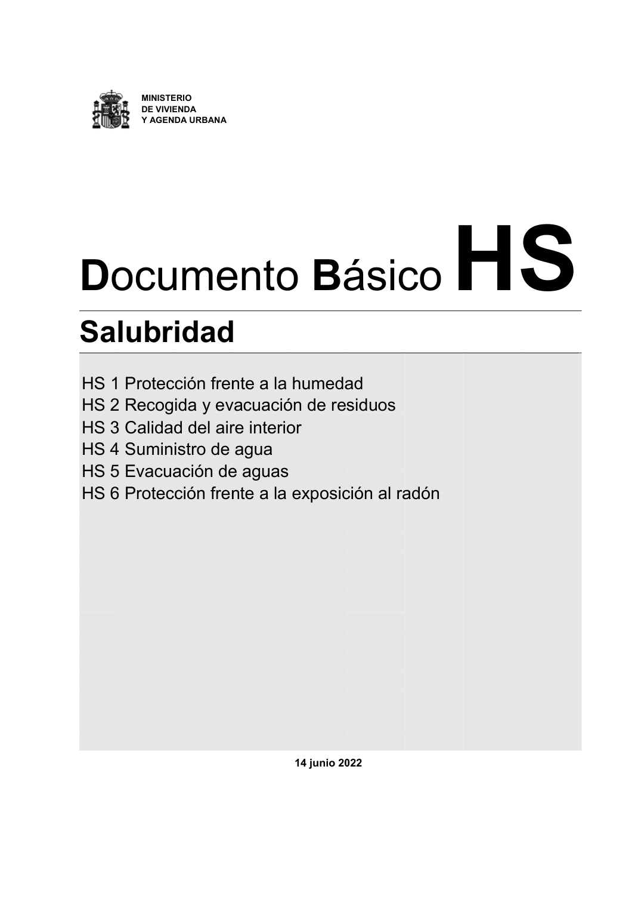

DB-HS Salubridad · edición 2022-06-14 · capa oficial
Documento DB-HS-oficial · SHA-256 del PDF 68df3caacc95f71aee2ec1ba7b2c65ae66155c21e3a8785521b8fdd4fd640d3b
Página física 1 de 184.
Copia fiel del PDF fuente · Fuente oficial
Ficha de la disposición en la fuente oficial
Formato: Texto de la página (Markdown)
Do Sa HS 1 HS 2 HS 3 HS 4 HS 5 HS 6 MINISTE DE VIVIENDA Y AGEN ocu lubr Protecc Recogi 3 Calidad 4 Sumini 5 Evacua 6 Protecc ERIO NDA URBANA ume idad ción fren ida y ev d del air istro de ación de ción fren ento d nte a la acuació re interio agua e aguas nte a la 14 junio 20 o Bá humeda ón de res or exposic 022 ásic ad siduos ción al ra co H adón HS 2

Datos candidatos: compruebe celdas y notas en el PDF.